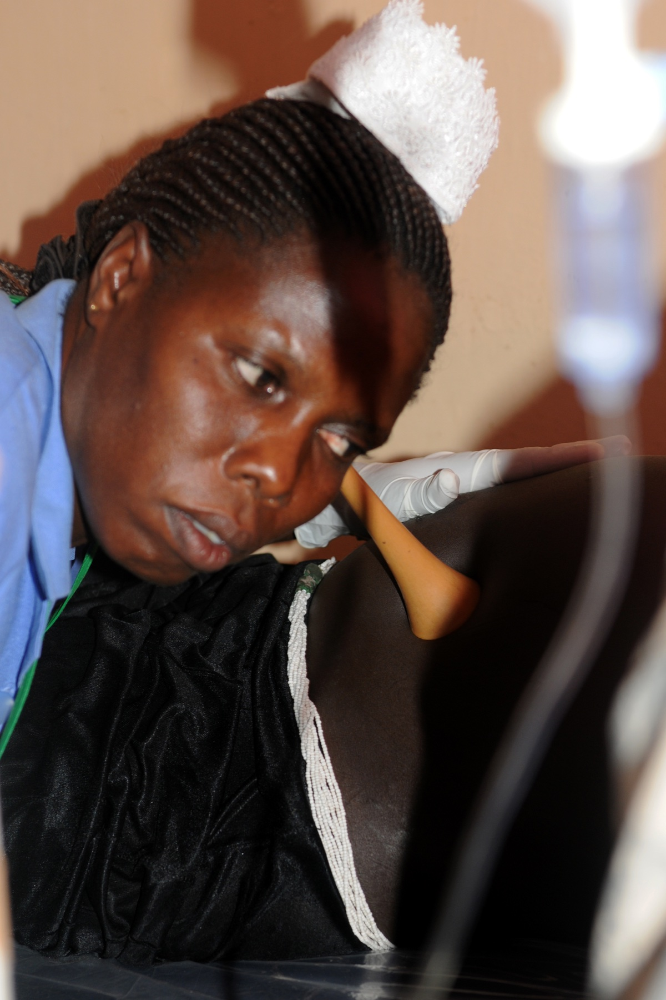

Página 2 · Vigilância aguda e cardiotocografia
Quando e com que frequência vigiar o batimento
De quanto em quanto tempo se escuta o coração do feto — e a partir de quando a cardiotocografia entra em cena?
Ausculta intermitente no baixo risco
No baixo risco, a ausculta intermitente segue dois tempos. Durante a dilatação, ausculta-se a cada 30 minutos. No período expulsivo, a cada 5 ou 15 minutos — e aqui mora uma divergência de autores: alguns diferenciam (5 minutos para alto risco, 15 minutos para baixo risco), outros já preconizam 5 em 5 minutos para todos no expulsivo. FEBRASGO/OMS tendem ao 5 minutos para todos no expulsivo.
O intervalo da ausculta na dilatação do baixo risco tem duas âncoras BR ativas. Renderizados lado a lado como a pegadinha de banca que são — sem escolher em silêncio:
Ausculta intermitente no alto risco
No alto risco, aperta-se a vigilância: durante toda a dilatação, a cada 15 minutos; no período expulsivo, a cada 5 minutos. Esses dois números são convergentes entre MS, FEBRASGO/OMS e ACOG — não disparam a divergência do baixo risco.
| Risco | Dilatação | Expulsivo |
|---|---|---|
| Baixo risco | 30 min (× 15 min do MS — PVE-2) | 5 ou 15 min |
| Alto risco | 15 min | 5 min |
Rodapé — quando indicar CTG: alto risco pré-natal ≥30–32 sem, semanal; baixo risco só se >40 sem (pós-datismo).

O cenário clássico da ausculta intermitente: o estetoscópio de Pinard aplicado diretamente sobre o abdome gravídico, no foco de melhor ausculta fetal (localizado por palpação do dorso).
O achado está no contato instrumento–abdome: diferente da cardiotocografia, que registra continuamente batimento e contrações em traçado, o Pinard depende de escuta pontual e contagem em janelas definidas. Também não se confunde com o sonar Doppler portátil — este amplifica o som eletronicamente, o Pinard é acústico e exige aproximação direta.
Fonte: US Army Africa, via Wikimedia Commons — CC BY 2.0 · página de origem
Por que a cardiotoco no alto risco
No alto risco, a monitorização acaba sendo feita pela cardiotocografia, e por um bom motivo: ela registra de forma objetiva num gráfico e por tempo maior três coisas ao mesmo tempo — a frequência cardíaca fetal, a metrossístole (contração) e a movimentação fetal. É a vantagem sobre a ausculta pontual: em vez de fotografias soltas do batimento, um filme contínuo que correlaciona batimento com contração.
A cardiotoco não é rotina de baixo risco
Guarde a regra que a banca adora inverter: a cardiotocografia não é rotina no baixo risco — é exame de alto risco. Pedir CTG de rotina para toda gestante de baixo risco é conduta errada. Há uma única exceção relevante, o pós-datismo, logo abaixo.
Cardiotoco no pré-natal de alto risco
No pré-natal de alto risco, a cardiotocografia começa a partir de 30 a 32 semanas, em geral semanalmente; em alguns casos duas vezes por semana; e nos casos graves internados, até diariamente. É a mesma diabética prévia da página anterior — o alto risco que teme a morte súbita intraútero — que justifica essa vigilância seriada: link direto entre a indicação de observar movimento e a de repetir a CTG.
A exceção do pós-datismo
A exceção que libera a CTG no baixo risco é a gestante que passa de 40 semanas. Com 40 semanas faz-se uma cardiotocografia; com 41 semanas, uma nova, para decidir entre esperar ou internar. Com 41 semanas, é preferível internar e induzir, se possível — mas isso não é indicação absoluta de parto. O que é obrigatório é ter cardiotocografia na gestante com mais de 40 semanas, no mínimo semanal, até o parto. (A tendência internacional recente firma indução em 41+0; o ponto ancora que >40 sem obriga vigilância, não parto imediato.)
Interativo: deslize a idade gestacional na régua para ver a conduta correspondente.
A linha do tempo organiza os cortes por cenário: a CTG seriada do alto risco começa em 30–32 semanas e a exceção do pós-datismo libera a CTG no baixo risco após 40 semanas. Deslize a idade gestacional e veja a conduta acender — em 41 semanas, preferível internar/induzir, mas não é parto obrigatório.Quiz — fixação
Gestante de alto risco, em trabalho de parto na fase de dilatação. Qual o intervalo correto da ausculta intermitente, e a partir de quando a CTG de pré-natal costuma iniciar nesse perfil?
- B) Correta. Alto risco: dilatação a cada 15 min e expulsivo a cada 5 min; a CTG seriada de pré-natal inicia em 30–32 sem (semanal, até diária nos graves internados).
- A) Troca o cenário de risco. 30 min é o intervalo do baixo risco na dilatação (e ainda sob divergência com o MS); 36 sem não é o marco de início.
- C) Mistura fase do parto com idade gestacional. 5 min é o intervalo do expulsivo, não da dilatação; e ">40 sem" é a exceção do baixo risco (pós-datismo), não a regra do alto risco.
- D) Inverte fase e nega a indicação central. A ausculta de 15 min do alto risco é na dilatação (o expulsivo é 5 min), e a CTG é justamente o exame do alto risco no pré-natal.
Sobre a cardiotocografia na gestação, assinale a correta:
- B) Correta. A CTG é exame de alto risco; no baixo risco só entra por exceção — a mais cobrada é o pós-datismo, que obriga vigilância (não parto) a partir de 40 sem, semanal.
- A) Inverte a regra-mãe da página. CTG parece "quanto mais, melhor", mas rotina no baixo risco é sobrediagnóstico.
- C) Confunde preferência de conduta com imposição. 41 sem torna preferível internar/induzir, mas não é indicação absoluta de parto; o obrigatório é a vigilância.
- D) Subestima a periodicidade obrigatória. Aos 40 sem faz-se uma CTG e aos 41 uma nova, mantendo no mínimo semanal até o parto — não uma só e pronto.
Ligado o monitor, falta o essencial que separa quem faz o exame certo de quem invalida o traçado: como se posiciona a paciente — e o que, afinal, essa curva está lendo.